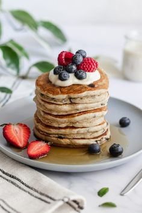

Hola Potrero
Ingedientes
- 1/2 Taza de harina de avena
- 2 sobres de stevia
- 1 cdta de escencia de vainilla
- 1 cdta de polvo de hornear
- 1 huevo
- 2/3 taza de leche descremada
Preparacion
- Integrar todos los ingredientes y disponer mezclaen sarten antiadherente de manera dehacer mini panqueques o panqueques mas grandes
- Rinde para 2 personas
